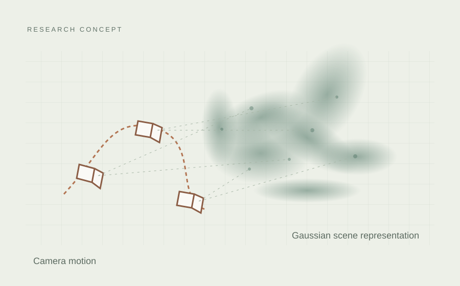

3D Vision & SLAM
3D Gaussian Splatting for SLAM
RPM Robotics Lab · SNU · Ongoing · Manuscript in preparation
Ongoing research on Gaussian scene representations for camera tracking and 3D mapping.

Research background
SLAM estimates camera motion while building a map of the environment. This research studies 3D Gaussian Splatting as the map representation.
My contribution
Undergraduate research with Prof. Ayoung Kim at RPM Robotics Lab, Seoul National University.
Research focus
1. Gaussian scene mapping
Investigating 3D Gaussian Splatting for SLAM and geometrically consistent mapping.
Current status
First-author manuscript in preparation.